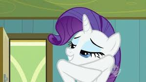
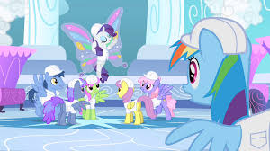
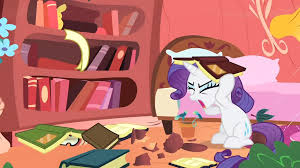
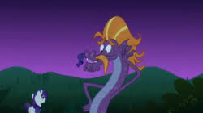

Personality
Love of beauty
When Rarity meets Twilight Sparkle for the first time, she is busy decorating Ponyville's pavilion for the Summer Sun Celebration. As soon as Rarity turns to look at Twilight, she expresses concern for Twilight's messy mane and practically forces on her the first of many makeovers while the besotted Spike looks on.
Rarity cares for her own beauty as well. She tries to show up Trixie in Boast Busters by making herself a dress from Trixie's curtain, but Trixie retaliates by ruining Rarity's mane, making her burst into tears and run away. Rarity is also particular about her cleanliness: she panics while trying to avoid getting muddy in Look Before You Sleep and tries to keep herself from getting soaked in the rain to avoid it messing up her mane. This causes some conflict with her friend Applejack, who is, by contrast, not at all bothered about getting muddy or wet.
Center of attention
Rarity expresses admiration of Fluttershy's grace and poise during Green Isn't Your Color and implores Fluttershy to model her clothing despite the fact that Fluttershy doesn't enjoy putting herself in front of others and only asks her because Photo Finish is scheduled to come photograph her work. When Rarity loses the spotlight to Fluttershy, she attempts to overcome her envy and remain very supportive of Fluttershy. However, the same could be said of Rainbow Dash and Rarity in Sonic Rainboom. After Rainbow Dash expresses disappointment that the others would not be able to go to Cloudsdale to cheer her on in the Best Young Flyer competition, Rarity insists that they all find a way to go there and support her, and has Twilight test a spell on her that would allow her to fly in Cloudsdale. Rarity gains a lovely pair of butterfly-like wings thanks to this spell, but she steals the spotlight, showing them off to everyone and even entering the competition herself, sending Rainbow Dash into a nervous breakdown. Rarity eventually falls from the sky after burning her wings from flying too close to the sun, much like Icarus of Greek legend. Rainbow Dash spots Rarity as she falls and flies to save her, performing a sonic rainboom in the process. Rarity later apologizes to Rainbow Dash for her behavior and calls her the greatest flier in Equestria.
Mannerisms
Rarity's mannerisms are similar to those of Scarlett O'Hara, the histrionic anti-heroine of Gone With the Wind. Many of Rarity's lines are rephrased from lines Scarlett says in the 1939 movie. Her vocabulary is formal, and she is prone to use complex words and more sophisticated, refined phrasing than her friends. As a fashionista, she often uses French-based terms in her vernacular. She speaks with a cultivated trans-Atlantic dialect, and shares some mannerisms with similarly accented Hollywood actresses, such as Katharine Hepburn
Rarity sometimes gets carried away with her attention to detail. In Look Before You Sleep, she has difficulty tearing herself away from fixing a messy bookcase despite the much bigger problem of a tree that crashed into Twilight's bedroom. In Winter Wrap Up, she becomes so preoccupied with fixing Twilight's messy bird's nest that she spends nearly the entire day on it, when she was supposed to be producing nests in large numbers.
Rarity shows herself to be tough and resourceful in dealing with the Diamond Dogs in A Dog and Pony Show. Even though the others are worried she would panic over how dirty the underground was, Rarity takes control of the situation quite well, manipulating the Diamond Dogs into releasing her and even letting her have several carts full of gems. Rarity's prim ways and aversion to disorder and dirt clashes with Applejack's brashness in Look Before You Sleep.
Whenever Rarity finds herself in a stressful situation, she has a tendency to eat large amounts of ice cream
Generosity
While Rarity cares about her appearance quite a bit, being averse to stepping in mud or risking getting herself messy, she is not above getting her hooves dirty when it comes to helping her friends or creatures in need. She slices off her own tail to calm down the sea serpent in Friendship is Magic, part 2, willing to sacrifice her beauty to help restore the distressed serpent's "fabulosity". This action earns her the element of generosity, and later, when she activates the element, her tail is restored.
Rarity is hypnotized by Discord into believing a large boulder is actually a giant diamond in The Return of Harmony Part 1. For a short moment she resists the temptation, but soon she becomes brainwashed, obsessively protecting her "diamond" and refusing to let anybody near it, as she becomes possessive and greedy. This continues in The Return of Harmony Part 2, where she refuses to part with the boulder and names it "Tom", while additionally hoarding other items she sees as valuable, such as the jewelry of the Elements of Harmony themselves. After the brainwashing is cured, she throws the boulder away and tells her friends to "never speak of this again" in a hushed but assertive whisper.
Skills
Magic
As a unicorn, Rarity performs magic. While it may not be up to the standards of Twilight Sparkle, she uses it in connection with making things "fabulous", like gem-finding, dressmaking, and topiary art. She magically attaches her sheared tail hair to Steven Magnet's mustache in Friendship is Magic, part 2, and she also reattaches a large branch to a tree in Look Before You Sleep and magically trims its foliage into topiaries. She puts on an impressive light display for the fashion show she holds for Hoity Toity in Suited For Success. She uses sewing and cutting tools through telekinesis with the precision needed to make her dresses, manipulating multiple items at once.
Rarity also uses her magic to expose underground gems, which is a major plot point in the episode A Dog and Pony Show. Twilight copies this spell in the same episode; Spike says that Twilight "can copy Rarity's gem-finding spell," and Twilight says that "Rarity showed [her] how she did it a while back." Unlike Twilight, who had to learn it, Rarity's gem-finding ability developed on its own: her story in The Cutie Mark Chronicles shows this ability activating by itself without her knowingly casting a spell.
Close combat 
Despite Rarity's delicate nature and formal personality, she shows a propensity for brute force. Like the other ponies, Rarity gets into physical conflicts throughout the series: she delivers a kick to the manticore's face in Friendship is Magic, part 2, knocks away Twilight with a whip of her flank in Sonic Rainboom, and delivers a flying kick with a martial arts stance to Applejack with a karate yell in The Return of Harmony Part 2. In Dragon Quest, she threatens the teenage dragons, viciously telling them that she will "rip [them] to pieces" if they try to hurt Spike.
Feminine charms
Rarity has a talent for charming male ponies to help her and her friends. In The Best Night Ever, she talks two stallions—Caramel and Lucky Clover—into pulling the carriage to take her and her friends to the Grand Galloping Gala, and in Putting Your Hoof Down, she sweet-talks another—Gizmo—into selling her his piece of asparagus, which Fluttershy needs for Angel's salad. In Castle Sweet Castle, Rarity convinces Spike to keep Twilight from coming back to the Castle of Friendship. In Rarity Investigates!, Sassy Saddles says that Rarity can sweet talk a filly out of candy after Rarity coaxes a delivery stallion—"Package Deal"—into making an extra delivery.
Career
Rarity works as a fashion designer at Carousel Boutique. Rarity's work is so important to her that during the parasprite crisis in Ponyville in Swarm of the Century, she yells in panic and rushes to her boutique once she realizes the parasprites might get there and eat her work.
Rarity stresses herself into making a new set of dresses the way her friends want them, going as far as following all their instructions instead of her own instincts. She is unhappy with the results, even though her friends are very satisfied. When these dresses are devastatingly criticized by "the bigwig fashion hotshot" Hoity Toity, she locks herself in her room, lamenting her ruined career; luckily for her, her friends are able to convince Hoity Toity to hold another fashion show, this time with the original dresses.
Rarity is quite willing to let Spike help her out with her work, and shows some concern for his welfare. They go gem-hunting together in A Dog and Pony Show, and she rewards him for his assistance with "the finest reward", a gem, which he holds very dear to him simply for being a gift from Rarity. At the end of the episode, once she has several carts full of gems, she lets Spike indulge on a great number of them. He willingly gives himself as a pin-cushion in Green Isn't Your Color and says he "can't feel a thing" thanks to his thick scales.
Rarity wears a pair of reading glasses while sewing. In Molt Down, she says that she talks to herself while she sews, which apparently helps her think.
Rarity – element of generosity
| Kind | Unicorn |
| Sex | Female |
| Residence | Carousel Boutique, Ponyville |
| Occupation |
Fashion designer Shopkeeper Seamstress Pony Tones soprano singer School of Friendship generosity teacher Council of Friendship member |